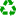
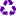

<!doctype html>
<html lang="en">
    <head>
        <meta charset="utf-8">
        <meta http-equiv="X-UA-Compatible" content="IE=edge">
        <meta name="viewport" content="initial-scale=1,user-scalable=no,maximum-scale=1,width=device-width">
        <meta name="mobile-web-app-capable" content="yes">
        <meta name="apple-mobile-web-app-capable" content="yes">
        <link rel="stylesheet" href="css/leaflet.css">
        <link rel="stylesheet" href="css/L.Control.Layers.Tree.css">
        <link rel="stylesheet" href="css/L.Control.Locate.min.css">
        <link rel="stylesheet" href="css/qgis2web.css">
        <link rel="stylesheet" href="css/fontawesome-all.min.css">
        <link rel="stylesheet" href="css/leaflet-measure.css">
        <style>
        html, body, #map {
            width: 100%;
            height: 100%;
            padding: 0;
            margin: 0;
        }
        </style>
        <title>Unidades de Reciclagem no Munícipio do Rio Grande</title>
    </head>
    <body>
        <div id="map">
        </div>
        <script src="js/qgis2web_expressions.js"></script>
        <script src="js/leaflet.js"></script>
        <script src="js/L.Control.Layers.Tree.min.js"></script>
        <script src="js/L.Control.Locate.min.js"></script>
        <script src="js/leaflet.rotatedMarker.js"></script>
        <script src="js/leaflet.pattern.js"></script>
        <script src="js/leaflet-hash.js"></script>
        <script src="js/Autolinker.min.js"></script>
        <script src="js/rbush.min.js"></script>
        <script src="js/labelgun.min.js"></script>
        <script src="js/labels.js"></script>
        <script src="js/leaflet-measure.js"></script>
        <script src="data/UnidadeNoContatada_3.js"></script>
        <script src="data/UnidadeContatada_4.js"></script>
        <script src="data/UnidadeDesativada_5.js"></script>
        <script src="data/IFEsCS_6.js"></script>
        <script>
        var highlightLayer;
        function highlightFeature(e) {
            highlightLayer = e.target;
            highlightLayer.openPopup();
        }
        var map = L.map('map', {
            zoomControl:false, maxZoom:28, minZoom:1
        }).fitBounds([[-32.237095967379055,-52.457090712377095],[-31.92319108062036,-51.89391333072487]]);
        var hash = new L.Hash(map);
        map.attributionControl.setPrefix('<a href="https://github.com/tomchadwin/qgis2web" target="_blank">qgis2web</a> &middot; <a href="https://leafletjs.com" title="A JS library for interactive maps">Leaflet</a> &middot; <a href="https://qgis.org">QGIS</a>');
        var autolinker = new Autolinker({truncate: {length: 30, location: 'smart'}});
        // remove popup's row if "visible-with-data"
        function removeEmptyRowsFromPopupContent(content, feature) {
         var tempDiv = document.createElement('div');
         tempDiv.innerHTML = content;
         var rows = tempDiv.querySelectorAll('tr');
         for (var i = 0; i < rows.length; i++) {
             var td = rows[i].querySelector('td.visible-with-data');
             var key = td ? td.id : '';
             if (td && td.classList.contains('visible-with-data') && feature.properties[key] == null) {
                 rows[i].parentNode.removeChild(rows[i]);
             }
         }
         return tempDiv.innerHTML;
        }
        // add class to format popup if it contains media
		function addClassToPopupIfMedia(content, popup) {
			var tempDiv = document.createElement('div');
			tempDiv.innerHTML = content;
			if (tempDiv.querySelector('td img')) {
				popup._contentNode.classList.add('media');
					// Delay to force the redraw
					setTimeout(function() {
						popup.update();
					}, 10);
			} else {
				popup._contentNode.classList.remove('media');
			}
		}
        var title = new L.Control({'position':'topleft'});
        title.onAdd = function (map) {
            this._div = L.DomUtil.create('div', 'info');
            this.update();
            return this._div;
        };
        title.update = function () {
            this._div.innerHTML = '<h2>Unidades de Reciclagem no Munícipio do Rio Grande</h2>';
        };
        title.addTo(map);
        var abstract = new L.Control({'position':'bottomright'});
        abstract.onAdd = function (map) {
            this._div = L.DomUtil.create('div',
            'leaflet-control abstract');
            this._div.id = 'abstract'

                abstract.show();
                return this._div;
            };
            abstract.show = function () {
                this._div.classList.remove("abstract");
                this._div.classList.add("abstractUncollapsed");
                this._div.innerHTML = 'Elaborado pela equipe IFEsCS:<br />Aisha Cabral Vieira;<br />Giully Conceição Soares;<br />Kimberly da Conceição Falcão;<br />Laura Bueno Póvoa;<br />Thiago da Silva Marinho.';
        };
        abstract.addTo(map);
        var zoomControl = L.control.zoom({
            position: 'topleft'
        }).addTo(map);
        L.control.locate({locateOptions: {maxZoom: 19}}).addTo(map);
        var measureControl = new L.Control.Measure({
            position: 'topleft',
            primaryLengthUnit: 'meters',
            secondaryLengthUnit: 'kilometers',
            primaryAreaUnit: 'sqmeters',
            secondaryAreaUnit: 'hectares'
        });
        measureControl.addTo(map);
        document.getElementsByClassName('leaflet-control-measure-toggle')[0].innerHTML = '';
        document.getElementsByClassName('leaflet-control-measure-toggle')[0].className += ' fas fa-ruler';
        var bounds_group = new L.featureGroup([]);
        function setBounds() {
        }
        map.createPane('pane_GoogleHybrid_0');
        map.getPane('pane_GoogleHybrid_0').style.zIndex = 400;
        var layer_GoogleHybrid_0 = L.tileLayer('https://mt1.google.com/vt/lyrs=y&x={x}&y={y}&z={z}', {
            pane: 'pane_GoogleHybrid_0',
            opacity: 1.0,
            attribution: '<a href="https://www.google.at/permissions/geoguidelines/attr-guide.html">Map data ©2015 Google</a>',
            minZoom: 1,
            maxZoom: 28,
            minNativeZoom: 0,
            maxNativeZoom: 20
        });
        layer_GoogleHybrid_0;
        map.addLayer(layer_GoogleHybrid_0);
        map.createPane('pane_GoogleRoad_1');
        map.getPane('pane_GoogleRoad_1').style.zIndex = 401;
        var layer_GoogleRoad_1 = L.tileLayer('https://mt1.google.com/vt/lyrs=m&x={x}&y={y}&z={z}', {
            pane: 'pane_GoogleRoad_1',
            opacity: 1.0,
            attribution: '<a href="https://www.google.at/permissions/geoguidelines/attr-guide.html">Map data ©2015 Google</a>',
            minZoom: 1,
            maxZoom: 28,
            minNativeZoom: 0,
            maxNativeZoom: 20
        });
        layer_GoogleRoad_1;
        map.addLayer(layer_GoogleRoad_1);
        map.createPane('pane_OSMStandard_2');
        map.getPane('pane_OSMStandard_2').style.zIndex = 402;
        var layer_OSMStandard_2 = L.tileLayer('http://tile.openstreetmap.org/{z}/{x}/{y}.png', {
            pane: 'pane_OSMStandard_2',
            opacity: 1.0,
            attribution: '<a href="https://www.openstreetmap.org/copyright">© OpenStreetMap contributors, CC-BY-SA</a>',
            minZoom: 1,
            maxZoom: 28,
            minNativeZoom: 0,
            maxNativeZoom: 19
        });
        layer_OSMStandard_2;
        map.addLayer(layer_OSMStandard_2);
        function pop_UnidadeNoContatada_3(feature, layer) {
            layer.on({
                mouseout: function(e) {
                    if (typeof layer.closePopup == 'function') {
                        layer.closePopup();
                    } else {
                        layer.eachLayer(function(feature){
                            feature.closePopup()
                        });
                    }
                },
                mouseover: highlightFeature,
            });
            var popupContent = '<table>\
                    <tr>\
                        <th scope="row">Nome</th>\
                        <td class="visible-with-data" id="nome">' + (feature.properties['nome'] !== null ? autolinker.link(feature.properties['nome'].toLocaleString()) : '') + '</td>\
                    </tr>\
                    <tr>\
                        <th scope="row">Descrição</th>\
                        <td class="visible-with-data" id="descricao">' + (feature.properties['descricao'] !== null ? autolinker.link(feature.properties['descricao'].toLocaleString()) : '') + '</td>\
                    </tr>\
                    <tr>\
                        <th scope="row">Áreas abrangentes</th>\
                        <td class="visible-with-data" id="area_abran">' + (feature.properties['area_abran'] !== null ? autolinker.link(feature.properties['area_abran'].toLocaleString()) : '') + '</td>\
                    </tr>\
                    <tr>\
                        <th scope="row">Situação</th>\
                        <td class="visible-with-data" id="situacao">' + (feature.properties['situacao'] !== null ? autolinker.link(feature.properties['situacao'].toLocaleString()) : '') + '</td>\
                    </tr>\
                    <tr>\
                        <th scope="row">Endereço</th>\
                        <td class="visible-with-data" id="endereco">' + (feature.properties['endereco'] !== null ? autolinker.link(feature.properties['endereco'].toLocaleString()) : '') + '</td>\
                    </tr>\
                    <tr>\
                        <th scope="row">Número</th>\
                        <td class="visible-with-data" id="numero">' + (feature.properties['numero'] !== null ? autolinker.link(feature.properties['numero'].toLocaleString()) : '') + '</td>\
                    </tr>\
                </table>';
            var content = removeEmptyRowsFromPopupContent(popupContent, feature);
			layer.on('popupopen', function(e) {
				addClassToPopupIfMedia(content, e.popup);
			});
			layer.bindPopup(content, { maxHeight: 400 });
        }

        function style_UnidadeNoContatada_3_0() {
            return {
                pane: 'pane_UnidadeNoContatada_3',
        rotationAngle: 0.0,
        rotationOrigin: 'center center',
        icon: L.icon({
            iconUrl: 'markers/UnidadeNoContatada_3.svg',
            iconSize: [19.0, 19.0]
        }),
                interactive: true,
            }
        }
        map.createPane('pane_UnidadeNoContatada_3');
        map.getPane('pane_UnidadeNoContatada_3').style.zIndex = 403;
        map.getPane('pane_UnidadeNoContatada_3').style['mix-blend-mode'] = 'normal';
        var layer_UnidadeNoContatada_3 = new L.geoJson(json_UnidadeNoContatada_3, {
            attribution: '',
            interactive: true,
            dataVar: 'json_UnidadeNoContatada_3',
            layerName: 'layer_UnidadeNoContatada_3',
            pane: 'pane_UnidadeNoContatada_3',
            onEachFeature: pop_UnidadeNoContatada_3,
            pointToLayer: function (feature, latlng) {
                var context = {
                    feature: feature,
                    variables: {}
                };
                return L.marker(latlng, style_UnidadeNoContatada_3_0(feature));
            },
        });
        bounds_group.addLayer(layer_UnidadeNoContatada_3);
        map.addLayer(layer_UnidadeNoContatada_3);
        function pop_UnidadeContatada_4(feature, layer) {
            layer.on({
                mouseout: function(e) {
                    if (typeof layer.closePopup == 'function') {
                        layer.closePopup();
                    } else {
                        layer.eachLayer(function(feature){
                            feature.closePopup()
                        });
                    }
                },
                mouseover: highlightFeature,
            });
            var popupContent = '<table>\
                    <tr>\
                        <th scope="row">Nome</th>\
                        <td class="visible-with-data" id="nome">' + (feature.properties['nome'] !== null ? autolinker.link(feature.properties['nome'].toLocaleString()) : '') + '</td>\
                    </tr>\
                    <tr>\
                        <th scope="row">Descrição</th>\
                        <td class="visible-with-data" id="descricao">' + (feature.properties['descricao'] !== null ? autolinker.link(feature.properties['descricao'].toLocaleString()) : '') + '</td>\
                    </tr>\
                    <tr>\
                        <th scope="row">Áreas abrangentes</th>\
                        <td class="visible-with-data" id="area_abran">' + (feature.properties['area_abran'] !== null ? autolinker.link(feature.properties['area_abran'].toLocaleString()) : '') + '</td>\
                    </tr>\
                    <tr>\
                        <th scope="row">Situação</th>\
                        <td class="visible-with-data" id="situacao">' + (feature.properties['situacao'] !== null ? autolinker.link(feature.properties['situacao'].toLocaleString()) : '') + '</td>\
                    </tr>\
                    <tr>\
                        <th scope="row">Endereço</th>\
                        <td class="visible-with-data" id="endereco">' + (feature.properties['endereco'] !== null ? autolinker.link(feature.properties['endereco'].toLocaleString()) : '') + '</td>\
                    </tr>\
                </table>';
            var content = removeEmptyRowsFromPopupContent(popupContent, feature);
			layer.on('popupopen', function(e) {
				addClassToPopupIfMedia(content, e.popup);
			});
			layer.bindPopup(content, { maxHeight: 400 });
        }

        function style_UnidadeContatada_4_0() {
            return {
                pane: 'pane_UnidadeContatada_4',
        rotationAngle: 0.0,
        rotationOrigin: 'center center',
        icon: L.icon({
            iconUrl: 'markers/UnidadeContatada_4.svg',
            iconSize: [19.0, 19.0]
        }),
                interactive: true,
            }
        }
        map.createPane('pane_UnidadeContatada_4');
        map.getPane('pane_UnidadeContatada_4').style.zIndex = 404;
        map.getPane('pane_UnidadeContatada_4').style['mix-blend-mode'] = 'normal';
        var layer_UnidadeContatada_4 = new L.geoJson(json_UnidadeContatada_4, {
            attribution: '',
            interactive: true,
            dataVar: 'json_UnidadeContatada_4',
            layerName: 'layer_UnidadeContatada_4',
            pane: 'pane_UnidadeContatada_4',
            onEachFeature: pop_UnidadeContatada_4,
            pointToLayer: function (feature, latlng) {
                var context = {
                    feature: feature,
                    variables: {}
                };
                return L.marker(latlng, style_UnidadeContatada_4_0(feature));
            },
        });
        bounds_group.addLayer(layer_UnidadeContatada_4);
        map.addLayer(layer_UnidadeContatada_4);
        function pop_UnidadeDesativada_5(feature, layer) {
            layer.on({
                mouseout: function(e) {
                    if (typeof layer.closePopup == 'function') {
                        layer.closePopup();
                    } else {
                        layer.eachLayer(function(feature){
                            feature.closePopup()
                        });
                    }
                },
                mouseover: highlightFeature,
            });
            var popupContent = '<table>\
                    <tr>\
                        <th scope="row">Nome</th>\
                        <td class="visible-with-data" id="nome">' + (feature.properties['nome'] !== null ? autolinker.link(feature.properties['nome'].toLocaleString()) : '') + '</td>\
                    </tr>\
                    <tr>\
                        <th scope="row">Descrição</th>\
                        <td class="visible-with-data" id="descricao">' + (feature.properties['descricao'] !== null ? autolinker.link(feature.properties['descricao'].toLocaleString()) : '') + '</td>\
                    </tr>\
                    <tr>\
                        <th scope="row">Áreas abrangentes</th>\
                        <td class="visible-with-data" id="area_abran">' + (feature.properties['area_abran'] !== null ? autolinker.link(feature.properties['area_abran'].toLocaleString()) : '') + '</td>\
                    </tr>\
                    <tr>\
                        <th scope="row">Situação</th>\
                        <td class="visible-with-data" id="situacao">' + (feature.properties['situacao'] !== null ? autolinker.link(feature.properties['situacao'].toLocaleString()) : '') + '</td>\
                    </tr>\
                </table>';
            var content = removeEmptyRowsFromPopupContent(popupContent, feature);
			layer.on('popupopen', function(e) {
				addClassToPopupIfMedia(content, e.popup);
			});
			layer.bindPopup(content, { maxHeight: 400 });
        }

        function style_UnidadeDesativada_5_0() {
            return {
                pane: 'pane_UnidadeDesativada_5',
        rotationAngle: 0.0,
        rotationOrigin: 'center center',
        icon: L.icon({
            iconUrl: 'markers/UnidadeDesativada_5.svg',
            iconSize: [19.0, 19.0]
        }),
                interactive: true,
            }
        }
        map.createPane('pane_UnidadeDesativada_5');
        map.getPane('pane_UnidadeDesativada_5').style.zIndex = 405;
        map.getPane('pane_UnidadeDesativada_5').style['mix-blend-mode'] = 'normal';
        var layer_UnidadeDesativada_5 = new L.geoJson(json_UnidadeDesativada_5, {
            attribution: '',
            interactive: true,
            dataVar: 'json_UnidadeDesativada_5',
            layerName: 'layer_UnidadeDesativada_5',
            pane: 'pane_UnidadeDesativada_5',
            onEachFeature: pop_UnidadeDesativada_5,
            pointToLayer: function (feature, latlng) {
                var context = {
                    feature: feature,
                    variables: {}
                };
                return L.marker(latlng, style_UnidadeDesativada_5_0(feature));
            },
        });
        bounds_group.addLayer(layer_UnidadeDesativada_5);
        map.addLayer(layer_UnidadeDesativada_5);
        function pop_IFEsCS_6(feature, layer) {
            layer.on({
                mouseout: function(e) {
                    if (typeof layer.closePopup == 'function') {
                        layer.closePopup();
                    } else {
                        layer.eachLayer(function(feature){
                            feature.closePopup()
                        });
                    }
                },
                mouseover: highlightFeature,
            });
            var popupContent = '<table>\
                    <tr>\
                        <th scope="row">Nome</th>\
                        <td class="visible-with-data" id="nome">' + (feature.properties['nome'] !== null ? autolinker.link(feature.properties['nome'].toLocaleString()) : '') + '</td>\
                    </tr>\
                    <tr>\
                        <th scope="row">Equipe</th>\
                        <td class="visible-with-data" id="equipe">' + (feature.properties['equipe'] !== null ? autolinker.link(feature.properties['equipe'].toLocaleString()) : '') + '</td>\
                    </tr>\
                </table>';
            var content = removeEmptyRowsFromPopupContent(popupContent, feature);
			layer.on('popupopen', function(e) {
				addClassToPopupIfMedia(content, e.popup);
			});
			layer.bindPopup(content, { maxHeight: 400 });
        }

        function style_IFEsCS_6_0() {
            return {
                pane: 'pane_IFEsCS_6',
        rotationAngle: 0.0,
        rotationOrigin: 'center center',
        icon: L.icon({
            iconUrl: 'markers/IFEsCS_6.svg',
            iconSize: [26.599999999999998, 26.599999999999998]
        }),
                interactive: true,
            }
        }
        map.createPane('pane_IFEsCS_6');
        map.getPane('pane_IFEsCS_6').style.zIndex = 406;
        map.getPane('pane_IFEsCS_6').style['mix-blend-mode'] = 'normal';
        var layer_IFEsCS_6 = new L.geoJson(json_IFEsCS_6, {
            attribution: '',
            interactive: true,
            dataVar: 'json_IFEsCS_6',
            layerName: 'layer_IFEsCS_6',
            pane: 'pane_IFEsCS_6',
            onEachFeature: pop_IFEsCS_6,
            pointToLayer: function (feature, latlng) {
                var context = {
                    feature: feature,
                    variables: {}
                };
                return L.marker(latlng, style_IFEsCS_6_0(feature));
            },
        });
        bounds_group.addLayer(layer_IFEsCS_6);
        map.addLayer(layer_IFEsCS_6);
        var overlaysTree = [
            {label: ' IFEsCS', layer: layer_IFEsCS_6},
            {label: ' Unidade Desativada', layer: layer_UnidadeDesativada_5},
            {label: ' Unidade Contatada', layer: layer_UnidadeContatada_4},
            {label: ' Unidade Não Contatada', layer: layer_UnidadeNoContatada_3},
            {label: "OSM Standard", layer: layer_OSMStandard_2, radioGroup: 'bm' },
            {label: "Google Road", layer: layer_GoogleRoad_1, radioGroup: 'bm' },
            {label: "Google Hybrid", layer: layer_GoogleHybrid_0, radioGroup: 'bm' },]
        var lay = L.control.layers.tree(null, overlaysTree,{
            //namedToggle: true,
            //selectorBack: false,
            //closedSymbol: '&#8862; &#x1f5c0;',
            //openedSymbol: '&#8863; &#x1f5c1;',
            //collapseAll: 'Collapse all',
            //expandAll: 'Expand all',
            collapsed: false, 
        });
        lay.addTo(map);
		document.addEventListener("DOMContentLoaded", function() {
            // set new Layers List height which considers toggle icon
            function newLayersListHeight() {
                var layerScrollbarElement = document.querySelector('.leaflet-control-layers-scrollbar');
                if (layerScrollbarElement) {
                    var layersListElement = document.querySelector('.leaflet-control-layers-list');
                    var originalHeight = layersListElement.style.height 
                        || window.getComputedStyle(layersListElement).height;
                    var newHeight = parseFloat(originalHeight) - 50;
                    layersListElement.style.height = newHeight + 'px';
                }
            }
            var isLayersListExpanded = true;
            var controlLayersElement = document.querySelector('.leaflet-control-layers');
            var toggleLayerControl = document.querySelector('.leaflet-control-layers-toggle');
            // toggle Collapsed/Expanded and apply new Layers List height
            toggleLayerControl.addEventListener('click', function() {
                if (isLayersListExpanded) {
                    controlLayersElement.classList.remove('leaflet-control-layers-expanded');
                } else {
                    controlLayersElement.classList.add('leaflet-control-layers-expanded');
                }
                isLayersListExpanded = !isLayersListExpanded;
                newLayersListHeight()
            });	
			// apply new Layers List height if toggle layerstree
			if (controlLayersElement) {
				controlLayersElement.addEventListener('click', function(event) {
					var toggleLayerHeaderPointer = event.target.closest('.leaflet-layerstree-header-pointer span');
					if (toggleLayerHeaderPointer) {
						newLayersListHeight();
					}
				});
			}
            // Collapsed/Expanded at Start to apply new height
            setTimeout(function() {
                toggleLayerControl.click();
            }, 10);
            setTimeout(function() {
                toggleLayerControl.click();
            }, 10);
            // Collapsed touch/small screen
            var isSmallScreen = window.innerWidth < 650;
            if (isSmallScreen) {
                setTimeout(function() {
                    controlLayersElement.classList.remove('leaflet-control-layers-expanded');
                    isLayersListExpanded = !isLayersListExpanded;
                }, 500);
            }  
        });       
        setBounds();
        </script>
    </body>
</html>
